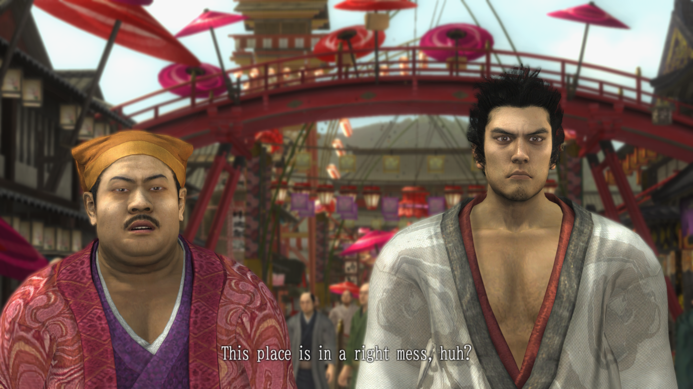
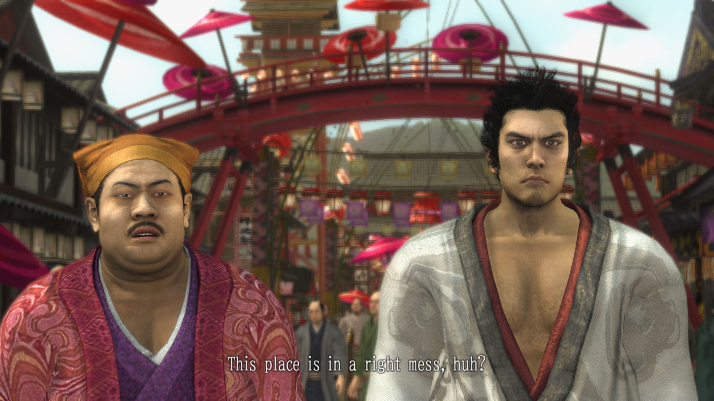

Drag across the picture. Left is the original picture. Right is the 2.0 patch with the optional file. Zoom in on the background, where the blur's grid pattern disappears.


Same cutscene frame, in Chapter 8. Hanging lanterns sway a little between captures, and the two images sit 1 to 2 pixels apart. No sharpening was added.